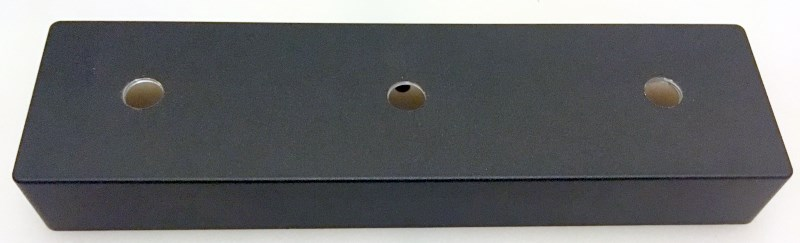
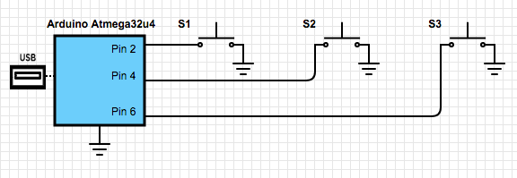
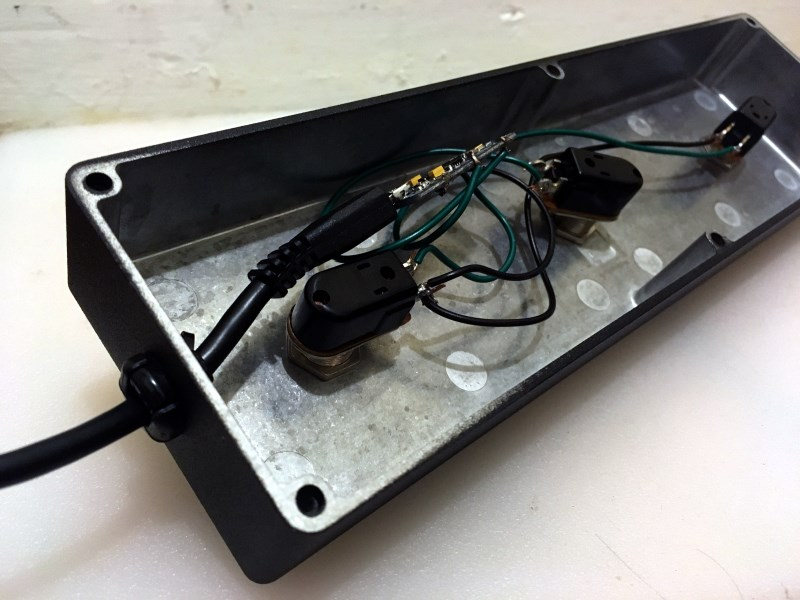
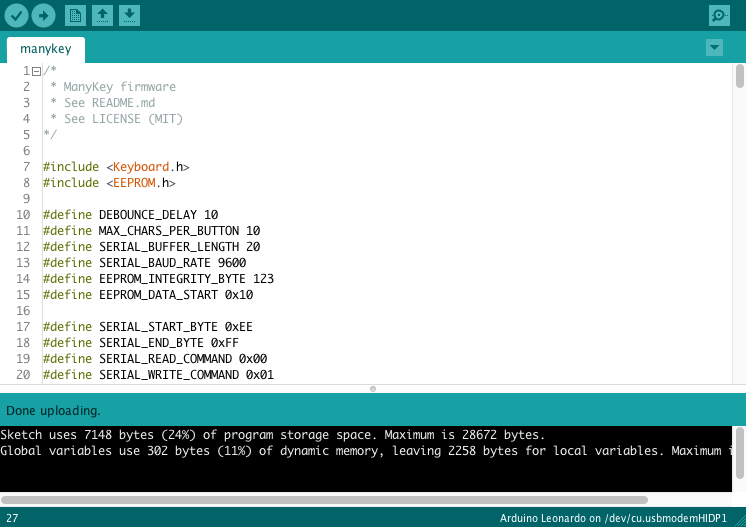
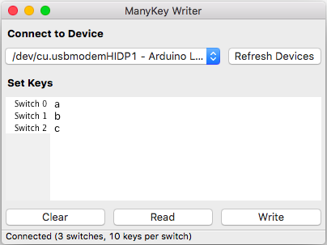
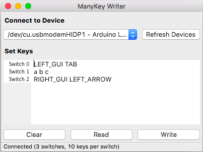
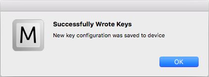

Tutorial - Build a ManyKey Macro Keyboard
Table of Contents
Introduction
So you want to build a ManyKey macro keyboard? That's great!
The first thing you'll want to do is decide the form-factor of your keyboard. Do you want a neat package that sits on your desk? Buttons for your feet to control? Something else entirely? This decision will dictate what parts you'll need to buy, though the majority of this tutorial will apply to anything you build.
For the purposes of this tutorial, we'll be building a three button foot keyboard.
Required parts and tools
Here are the tools we will need to build our three button foot keyboard.
- Soldering iron, and some solder
- Typical size philips head screwdriver
- Adjustable wrench
- Drill, with a 1/2" bit and a small bit for pilot holes
- Computer
And here are the components we'll be using!
Assembly
Once you've collected all the parts and tools, it's time to put this thing together.
The first step is to drill the enclosure for the three footswitches and the USB cable. You'll want to drill a small pilot hole to help keep your 1/2" bit in the right place.
With the holes drilled, the next step is to start wiring the electronics. I like to install the footswitches into the enclosure first to make sure my wire lengths are correct, but that is up to you.
The wiring here is very simple. When the footswitch is closed, the pin on the microcontroller will be pulled to ground, triggering a key press.
Next, plug the USB cable into the Arduino, thread it through the hole in the side, and install the plastic strain relief. Screw the bottom plate back onto the enclosure, and you're done with the hardware!
Now it's time to program the Arduino with the ManyKey firmware. If you haven't already, download and install the Arduino IDE from arduino.cc. Next, you'll want to download the code from the github repo, and open it in the Arduino IDE.
Connect your new keyboard to the computer with the USB cable. If you've never connected the chip to the computer before, you may get some driver installation popups. Once that's all taken care of, select "Arduino Leonardo" as the device type in the Arduino IDE menu. Select the correct port from the port dropdown as well.
If you wired the switches to different pins than the default 2, 4, and 6, you will want to change the BUTTON_COUNT and buttonPins variables.
At this point you should be ready to flash the Arduino. Hit that "Upload" button! Once the upload finishes, try hitting the buttons on your keyboard to confirm everything is working correctly.
Using ManyKey Writer
You're now ready to connect your new keyboard to your computer and program some useful functionality onto it!
If you haven't already, download the ManyKey Writer software here. Unzip the archive and run the app (macOS) or exe (Windows). Once the software is running, connect your new keyboard to a USB port on your computer. If you're on Windows, a driver dialog may pop up - let it do its thing.
Once you're ready, click the "Refresh Devices" button to populate the dropdown. In the dropdown, select your device - it is very likely to be identified as "Arduino Leonardo". If you do not see anything that looks like your device, try reconnecting your keyboard and restarting ManyKey Writer.
If everything has gone correctly, ManyKey writer will have loaded the current key configuration off your keyboard automatically, and should look like the screenshot below.
Next, let's make the keyboard do something more than print out a single letter.
We've been using the Mac version of ManyKey Writer, so let's give our foot keyboard some macOS functionality. I'm going to set it up so that the left button switches between active apps, the middle button prints "abc", and the right button goes back in the browser. Here's what that looks like.
The first line is defining the action for "Switch 0", which is the first switch we declared in the Arduino code. In this case, we know that is the left button. Our action is defined as "LEFT_GUI TAB". Actions are a list of keys separated by spaces. The complete list of compatible keys can be found here.
The second line is "a b c". This is telling the keyboard to press the "a", "b", and "c" keys all at once. It is not telling the computer to print "abc". This distinction is important. To illustrate this, take the example of setting the key to "a b c a b". This would also print "abc" on the computer while pressed, because the "a" and "b" keys can not be pressed twice at the same time.
The final line is pretty simple, "RIGHT_GUI LEFT_ARROW". This key combination will make most browsers on macOS go back.
With new key combinations entered, we can now write to the keyboard. Hit that "Write" button!
After clicking "OK", the software will automatically read the new configuration back from the keyboard. This will let you confirm that your commands were successfully saved. Everything you write to the keyboard is saved into special memory called EEPROM - this means your settings will persist even after disconnecting your keyboard from the computer.
What if you want your keyboard to control something that doesn't have a keyboard shortcut? You create a keyboard shortcut of course! Software like AutoHotkey (for Windows), or Karabiner (for macOS) can help you set up custom keyboard shortcuts. And once you have those, you should be good to go!
Conclusion
At this point you should have a functional macro keyboard. Nice job!